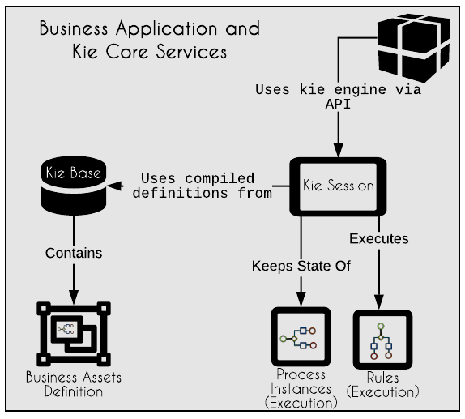

Understanding key concepts of jBPM
Since jBPM 5 when the Drools project and jBPM project started walking together, a new project group name was defined: Knowledge Is Everything – KIE. Later on, the name KIE spread to git repositories, Maven archetypes, class names, and all the rest of the relevant code that is common to Drools and jBPM.
A kie project is a Java project, maven based, that gets compiled into a kjar. A kjar is a simple jar file, configured with <packaging>kjar</packaging> in maven settings, inside the (pom.xml) of kie projects.
This deployable package carries the business assets, Java models and also a metadata descriptor file named kmodule.xml.
Two important moments should be considered in a business application lifecycle: design time and execution time. During the design, the team configures and creates definitions of processes and rules. During the execution, the engine uses these definitions to validate the business rules or create execution instances, based on these definitions.
This is how the execution of a business project happens in jBPM:
- When any runtime component tries to execute the kjar, it first validates the configurations inside kmodule.xml. Optionally, there are also other deployment descriptors to define additional configurations for the execution engine like auditing, persistence, and runtime strategy.
- Inside Kie Module (defined in kmodule.xml), there are two more core concepts that are essential for the functioning and understanding of business applications: Knowledge Base (also known as kie base or kbase) and Knowledge Session (also known as kie session or ksession).
- In a business application (kjar), all the processes and case definitions, all types of rule implementations and problem solvers are compiled and loaded into an in-memory Kie Base.
- The client application then will be able to contact and consume the assets via an API provided by the Kie Sessions. The Kie Session is responsible for the execution information of a business asset.
When a client service/application wants for example to start a business process, it interacts with a Kie Session to say “Kie Session, start a process instance based on the process definition named hiringProcess version 1.0.0 deployed into kie container with alias hiringApplication“.

Every kjar deployment is made available via a Kie Container. Each Kie Container has only one kjar deployment. It is usually identified by the deployed project GAV (group, artifact id, version) or an alias.
 | Process Definition is the bpmn2 file; the sequence of elements which represents the definition; Used to create many process instances; Process Instance: A single execution from a process; It is indeed the execution of a sequence of steps in which every state is stored. Many process instances can be created based on a process definition. |
With the presented concepts, you should be ready to proceed and get to know the tool better.
This blog post is part of the third section of the jBPM Getting started series: Automate your business with jBPM